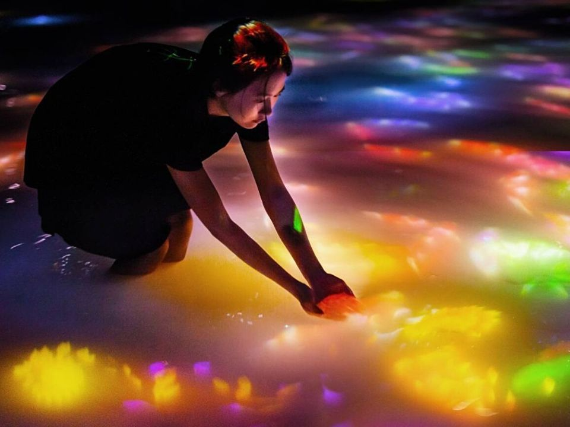

Sus obras se caracterizan por el uso de proyecciones digitales, sensores y sistemas informáticos que reaccionan a la presencia y el movimiento de los visitantes. En lugar de contemplar una obra estática, el público participa activamente en la construcción de la experiencia visual.
Zona de agua - Caminando entre el agua y la luz infinita

El objetivo de teamLab es cuestionar las divisiones tradicionales entre las personas, la naturaleza y la tecnología. Sus instalaciones buscan generar una percepción más integrada del mundo, donde los límites físicos y conceptuales se vuelven difusos.